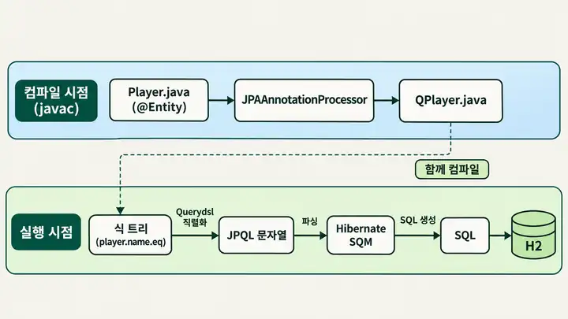
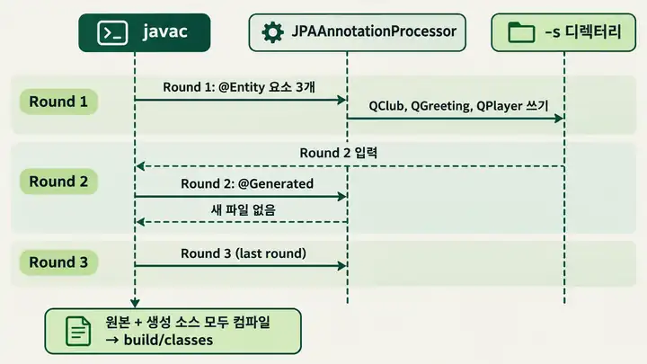
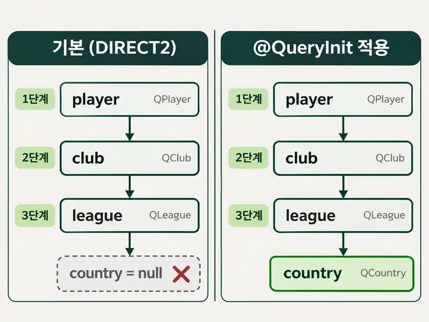

Querydsl / 01회
Querydsl 소개, 환경설정, 예제 도메인 모델
문자열 JPQL의 오류를 컴파일 시점으로 끌어오는 Q 타입이 javac의 애노테이션 처리 라운드에서 어떻게 생기고, 실행 시점에 어떤 경로로 JPQL과 SQL이 되는지를 빌드 로그와 바이트코드로 따라간 뒤 예제 도메인을 세운다.
오늘 끝나면 할 수 있는 것
- 문자열 JPQL에서 필드 이름 오타와 파라미터 타입 불일치가 각각 언제 드러나는지(혹은 드러나지 않는지) 실행 결과로 보여 주고, Querydsl이 그 검사를 컴파일 단계로 옮기는 원리를 설명할 수 있다.
- build.gradle의 Querydsl 설정 네 줄이 javac의 어떤 인자(
-classpath,-processorpath,-s)로 바뀌는지 말하고, jakarta 분류자 누락·프로세서 경로 누락·jakarta.persistence-api 누락의 증상을 구분할 수 있다. -XprintRounds출력을 읽고, 프로세서가 서비스 파일로 발견되어 Q 소스를 쓰고 그 소스가 같은 컴파일 안에서 다시 컴파일되기까지의 순서를 설명할 수 있다.- 생성된 Q 타입의 정적 인스턴스, 경로 필드,
PathInits를 읽고 기본 변수 이름에 1이 붙는 경우와 3단계 경로가 null이 되는 이유를 설명할 수 있다. - Querydsl 식이 JPQL 문자열로, 다시 Hibernate를 거쳐 SQL로 바뀌는 두 번의 변환을
use_sql_comments로그와 바인딩 로그로 확인할 수 있다.
핵심 강의 → 핵심 요약 → 실무 재판단 → 적용 연습 → 이해 확인
01 핵심 강의
이 강의의 차례 · 소제목 14개
- 이 회차의 질문: 문자열 쿼리의 오류는 언제 드러나는가
- 소개: 문자열 JPQL이 늦게 실패하거나 아예 실패하지 않는 세 장면
- 전체 그림: 컴파일 시점의 코드 생성과 실행 시점의 두 번의 변환
- 프로젝트 생성: build.gradle에 들어가는 Querydsl 네 줄
- 한 층 아래: javac는 프로세서를 어떻게 찾고 몇 번 도는가
- Querydsl 설정과 검증: 엔티티 하나로 끝까지 한 바퀴
- 생성된 Q 타입 해부
- 식은 데이터다: Q 타입 위에서 쿼리가 조립되는 방식
- 라이브러리 살펴보기
- H2 데이터베이스 설치
- 스프링 부트 설정 — JPA, DB
- 예제 도메인 모델과 동작 확인
- 흔한 오해와 함정
- 다른 주제와의 연결
이 회차의 질문: 문자열 쿼리의 오류는 언제 드러나는가
JPA 기본편과 스프링 데이터 JPA 권에서 JPQL은 언제나 문자열이었다. em.createQuery(...)에 넘기든 @Query에 적든, 자바 컴파일러에게 그것은 큰따옴표로 둘러싸인 문자들의 나열일 뿐이다. 컴파일러는 그 안에 적힌 엔티티 이름이 실재하는지, 필드 이름에 오타가 없는지, 비교하는 값의 타입이 맞는지 알지 못한다. 그 검사는 누군가 그 코드를 실제로 실행해 JPA 구현체가 문자열을 파싱하는 순간으로 미뤄진다.
Querydsl은 이 검사를 컴파일 시점으로 끌어온다. 쿼리를 문자열 대신 자바 메서드 호출로 쓰게 하고, 그 호출이 참조하는 필드를 엔티티로부터 자동 생성한 클래스, 곧 Q 타입(query type)으로 제공한다. Q 타입이 진짜 자바 클래스이므로 오타는 "그런 필드가 없다"는 컴파일 오류가 되고, 타입이 맞지 않는 비교는 "그런 메서드가 없다"는 컴파일 오류가 된다. 이 회차는 그 Q 타입을 누가, 언제, 어떤 규칙으로 만드는지 javac의 애노테이션 처리(annotation processing) 단계까지 내려가 확인한다. 이어서 실행 시점에는 Q 타입으로 쓴 자바 코드가 어떤 경로를 거쳐 JPQL이 되고 SQL이 되는지를 로그로 보고, 이후 회차에서 계속 쓸 예제 도메인을 세운다.
이 권은 일곱 회차다. 이 회차가 소개·환경설정·예제 도메인을 맡고, 02회는 기본 문법 중 검색 조건·결과 조회·정렬·페이징·집합을, 03회는 조인·서브쿼리·Case 문·상수와 문자 더하기를, 04회는 중급 문법을 다룬다. 05회는 순수 JPA 리포지토리에서 Querydsl을 쓰는 방법과 JPAQueryFactory를 빈으로 공유할 때의 스레드 안전성을, 06회와 07회는 스프링 데이터 JPA와의 결합과 스프링 데이터가 제공하는 Querydsl 기능을 다룬다. 이 회차에서 문법은 Q 타입이 제대로 만들어졌는지 확인하는 데 필요한 만큼만 쓴다.
실험 환경은 JDK 21(Temurin 21.0.13), Gradle 9.1.0, 스프링 부트 3.5.16(스프링 프레임워크 6.2.19, 스프링 데이터 JPA 3.5.13), Hibernate ORM 6.6.53.Final, H2 2.3.232, HikariCP 6.3.3, Querydsl 5.1.0(jakarta 분류자)이다. 부트 3.5.16의 의존성 관리 BOM(spring-boot-dependencies)을 열어 보면 querydsl.version이 5.1.0으로 정해져 있고 querydsl-bom을 들여온다. 같은 컴퓨터의 Gradle 캐시에 있던 부트 4.0.8과 4.1.2의 BOM도 이 값을 5.1.0으로 두고 있었다. 예제 도메인은 이 회차를 위해 새로 만든 구단(Club)과 선수(Player)다.
소개: 문자열 JPQL이 늦게 실패하거나 아예 실패하지 않는 세 장면
Querydsl이 무엇을 해결하는지 정확히 보려면, 해결 전의 모습을 실행 결과로 먼저 봐야 한다. 아래 세 장면은 모두 이 회차 끝에서 만들 Player 엔티티(이름 name, 나이 age, 소속 구단 club)를 대상으로 스프링 부트 테스트 안에서 실행한 것이다.
장면 1: 필드 이름 오타
try {
em.createQuery("select p from Player p where p.nmae = :name", Player.class);
} catch (Exception e) {
System.out.println("EX = " + e.getClass().getName());
System.out.println("MSG = " + e.getMessage());
}EX = java.lang.IllegalArgumentException
MSG = org.hibernate.query.sqm.UnknownPathException: Could not resolve attribute 'nmae' of 'lab.querydsl.domain.Player' [select p from Player p where p.nmae = :name]name을 nmae로 잘못 적었다. 이 코드는 아무 문제 없이 컴파일된다. 오류는 createQuery가 호출되어 Hibernate가 문자열을 파싱하고 Player의 속성 목록에서 nmae를 찾지 못한 순간에야 난다. JPA API의 createQuery는 잘못된 쿼리 문자열에 대해 IllegalArgumentException을 던지도록 정해져 있고, Hibernate는 자기 예외(UnknownPathException)를 그 안에 원인으로 넣었다. 문제는 시점이다. 이 줄이 어떤 조건 분기 안에 있고 테스트가 그 분기를 지나가지 않는다면, 오류는 운영 환경에서 사용자가 그 분기를 처음 밟을 때 드러난다.
장면 2: 타입이 맞지 않는 파라미터
em.createQuery("select p from Player p where p.name = :name", Player.class)
.setParameter("name", 10) // 문자열 필드에 정수를 넘겼다
.getResultList();
System.out.println("NO EXCEPTION");/* select p from Player p where p.name = :name */ select p1_0.player_id, p1_0.age, p1_0.club_id, p1_0.name from player p1_0 where p1_0.name=?
binding parameter (1:VARCHAR) <- [10]
NO EXCEPTION더 곤란한 장면이다. 문자열 필드 name과 정수 10을 비교하라고 했는데 예외가 나지 않았다. Hibernate 6.6.53은 정수 10을 VARCHAR 파라미터 '10'으로 바인딩해 쿼리를 그대로 실행했다. 데이터베이스는 이름이 문자열 '10'인 행을 찾는 평범한 쿼리를 받았을 뿐이다. 장면 1은 늦게라도 실패했지만 장면 2는 실패조차 하지 않는다. 호출하는 쪽이 넘긴 값의 타입이 틀렸다는 사실은 기대와 다른 조회 결과라는 간접 증상으로만 남는다. 이름 있는 파라미터 :name과 setParameter("name", ...)의 연결도 문자열 일치에만 기대고 있으므로, 파라미터 이름의 오타 역시 실행해야 드러난다.
장면 3: 조건이 붙었다 떨어지는 동적 쿼리
String jpql = "select p from Player p";
boolean hasWhere = false;
if (name != null) {
jpql += " where p.name = :name";
hasWhere = true;
}
if (minAge != null) {
jpql += (hasWhere ? " and" : " where") + " p.age >= :minAge";
}
TypedQuery<Player> query = em.createQuery(jpql, Player.class);
if (name != null) query.setParameter("name", name);
if (minAge != null) query.setParameter("minAge", minAge);검색 조건이 있을 때만 붙는 쿼리를 문자열로 조립하면 이런 모양이 된다. 앞 공백 하나를 빠뜨리면 p.age가 앞 단어에 붙어 버리고, where와 and 중 무엇을 붙일지 상태를 따로 들고 다녀야 하며, 문자열에 조건을 붙인 분기와 파라미터를 바인딩하는 분기가 따로 놀아 서로 어긋나기 쉽다. 조건이 두 개면 조합은 네 가지이고, 세 개면 여덟 가지다. 모든 조합을 테스트하지 않으면 어느 조합의 문자열이 깨졌는지 알 수 없다. 동적 쿼리를 Querydsl로 쓰는 방법은 04회의 주제이고, 여기서는 문자열 조립이 컴파일러의 도움을 전혀 받지 못한다는 점만 기억해 두자.
같은 실수를 Q 타입으로 쓰면
이제 같은 두 실수를 Querydsl로 써 보자. QPlayer는 이 회차에서 만들 Q 타입이고, player는 그 안의 정적 인스턴스다.
import static lab.querydsl.domain.QPlayer.player;
Predicate typo() {
return player.nmae.eq("kim"); // 필드 이름 오타
}
Predicate wrongType() {
return player.name.eq(10); // 문자열 경로에 정수
}Typo.java:9: error: cannot find symbol
return player.nmae.eq("kim");
^
symbol: variable nmae
location: variable player of type QPlayer
Typo.java:13: error: no suitable method found for eq(int)
return player.name.eq(10);
^
method SimpleExpression.eq(String) is not applicable
(argument mismatch; int cannot be converted to String)
method SimpleExpression.eq(Expression<? super String>) is not applicable
(argument mismatch; int cannot be converted to Expression<? super String>)
2 errors두 실수 모두 컴파일 오류가 되었다. 첫째는 QPlayer 클래스에 nmae라는 필드가 없어서, 둘째는 name 필드의 타입인 StringPath가 eq(String)과 eq(Expression<? super String>)만 갖고 있어서 생긴 오류다. 쿼리 문법의 오류가 자바 타입 시스템의 오류로 바뀐 것이다. IDE의 자동 완성이 필드 이름을 보여 주는 것도 같은 이유다. QPlayer가 엔티티의 필드를 그대로 반영한 진짜 클래스이기 때문이다.
Querydsl 레퍼런스 문서의 소개(Introduction) 장은 이 라이브러리가 HQL 쿼리를 타입 안전하게 유지할 필요에서 태어났다고 적는다. 문자열 연결로 쿼리를 점진적으로 조립하면 읽기 어렵고, 도메인 타입과 속성을 문자열로 참조하는 것이 안전하지 않다는 것이 출발점이었다. 첫 대상은 Hibernate의 HQL이었고, 지금은 JPA, JDO, JDBC(SQL), MongoDB, 자바 컬렉션 등을 같은 방식으로 다룬다. 프로젝트의 공식 릴리스 기록으로는 2021년 7월의 5.0.0이 최소 요구 버전을 자바 8로 올리면서 jakarta.* 패키지 지원을 jakarta 분류자로 내놓았고, 이 회차를 쓰는 시점에 querydsl/querydsl 저장소의 마지막 릴리스는 2024년 1월 29일의 5.1.0이다.
JPA 표준에도 같은 목표를 가진 수단이 있다. Criteria API는 쿼리를 객체로 조립하고, 엔티티마다 정적 메타모델 클래스(엔티티 이름 뒤에 밑줄을 붙인 클래스)를 애노테이션 프로세서로 만들어 속성을 타입 안전하게 참조하게 한다. Querydsl은 같은 아이디어를 JPQL 문장과 비슷한 순서의 메서드 체인(select → from → where)으로 제공한다. 두 방식 모두 "엔티티에서 코드를 생성해 컴파일러에게 쿼리의 어휘를 알려 준다"는 같은 원리 위에 있다는 점이 이 회차의 핵심이다.
전체 그림: 컴파일 시점의 코드 생성과 실행 시점의 두 번의 변환
Querydsl이 끼어드는 지점은 두 곳이다. 하나는 컴파일 시점이다. javac가 엔티티 소스를 읽는 동안 Querydsl의 애노테이션 프로세서가 @Entity가 붙은 클래스를 찾아 Q 타입의 소스 파일을 쓴다. 다른 하나는 실행 시점이다. 우리가 Q 타입으로 조립한 식(expression)은 메모리 안의 객체 트리이고, Querydsl은 이 트리를 JPQL 문자열로 직렬화해 EntityManager에 넘긴다. 그 뒤는 문자열 JPQL과 똑같다. Hibernate가 JPQL을 파싱해 SQL을 만들고, JDBC가 그 SQL을 데이터베이스로 보낸다.
- 엔티티 소스
@Entity class Player가src/main/java에 있다. 아직 클래스 파일은 없다. - javac 1라운드javac가 소스를 파싱하고, 프로세서 경로에서 찾은
JPAAnnotationProcessor가@Entity요소를 받아QPlayer.java를-s디렉터리에 쓴다. - javac 2라운드 이후새로 생긴
QPlayer.java가 다음 라운드의 입력이 된다. 더 생기는 파일이 없으면 처리가 끝나고 원래 소스와 생성된 소스가 함께 컴파일된다. - 식 조립 (실행 시점)
player.name.eq("kim")은 연산자 하나와 인자 둘을 가진 객체 트리를 만든다. 아직 문자열은 없다. - 첫 번째 변환: Querydsl직렬화기가 트리를 걸어 다니며 JPQL 문자열을 만든다. 상수는 문자열에 박지 않고
?1같은 위치 파라미터로 뺀다. - 두 번째 변환: HibernateJPQL을 파싱해 의미 트리(SQM)를 만들고, 방언(Dialect)에 맞는 SQL을 만든다. 경로 탐색
player.club.name은 여기서 SQL 조인이 된다. - JDBC커넥션 풀에서 빌린 커넥션으로
PreparedStatement를 만들고 파라미터를 바인딩해 실행한다.
Hibernate 6.0 마이그레이션 가이드는 6.0의 큰 변화 중 하나로 HQL과 Criteria 쿼리를 모델링하는 전용 트리 구조로 옮겨 간 것을 들고, 이 트리를 Semantic Query Model, 줄여서 SQM이라고 부른다. 장면 1의 예외가 org.hibernate.query.sqm 패키지에서 나온 것도 이 때문이다. SQL 생성은 방언이 제공하는 SqlAstTranslator가 맡는다. 즉 Querydsl을 쓰더라도 SQL을 만드는 주체는 여전히 Hibernate이고, Querydsl의 몫은 "JPQL을 손으로 쓰지 않게 하는 것"까지다. 이 경계를 분명히 해 두면 이후 회차에서 "이 쿼리는 Querydsl로 왜 안 되지?"라는 질문의 상당수가 "JPQL로 왜 안 되지?"와 같은 질문이라는 것을 알게 된다.

프로젝트 생성: build.gradle에 들어가는 Querydsl 네 줄
프로젝트 뼈대는 start.spring.io에서 Gradle·Java·부트 3.x로 받고, 의존성으로 Spring Data JPA와 H2 Database를 고른다. 이 실험에는 웹 계층이 필요 없어서 Spring Web은 넣지 않았다. 롬복도 쓰지 않았다. 롬복 역시 애노테이션 프로세서로 동작하므로, 이 회차처럼 프로세서 경로를 들여다볼 때 출력이 섞이지 않게 하려는 것이다. 받은 build.gradle에 Querydsl 네 줄을 더하면 다음과 같다.
plugins {
id 'java'
id 'org.springframework.boot' version '3.5.16'
id 'io.spring.dependency-management' version '1.1.7'
}
group = 'lab'
version = '0.0.1-SNAPSHOT'
java {
toolchain {
languageVersion = JavaLanguageVersion.of(21)
}
}
repositories {
mavenCentral()
}
dependencies {
implementation 'org.springframework.boot:spring-boot-starter-data-jpa'
runtimeOnly 'com.h2database:h2'
testImplementation 'org.springframework.boot:spring-boot-starter-test'
testRuntimeOnly 'org.junit.platform:junit-platform-launcher'
// Querydsl
implementation 'com.querydsl:querydsl-jpa:5.1.0:jakarta'
annotationProcessor 'com.querydsl:querydsl-apt:5.1.0:jakarta'
annotationProcessor 'jakarta.annotation:jakarta.annotation-api'
annotationProcessor 'jakarta.persistence:jakarta.persistence-api'
}
tasks.named('test') {
useJUnitPlatform()
}Querydsl 줄을 하나씩 보자. 좌표 문자열은 그룹:아티팩트:버전:분류자 순서다. 분류자(classifier)는 같은 그룹·아티팩트·버전 아래에 놓인 서로 다른 jar를 구별하는 꼬리표다. Querydsl 5.x는 하나의 버전에 기본 jar와 jakarta 분류자 jar를 함께 배포한다. querydsl-apt의 pom을 열어 보면 Eclipse Transformer 메이븐 플러그인이 jakarta 분류자로 실행되도록 설정되어 있다. javax.* 기준으로 만든 바이트코드를 jakarta.* 기준으로 변환해 별도 jar로 내놓는 구조다. 부트 3.x는 jakarta.persistence를 쓰므로 반드시 jakarta 분류자 쪽을 골라야 한다. 이 실험에서는 버전을 5.1.0으로 직접 적었는데, 부트 3.5.16 BOM의 querydsl.version과 같은 값이다.
| 줄 | 들어가는 곳 | 하는 일 |
|---|---|---|
implementation 'com.querydsl:querydsl-jpa:5.1.0:jakarta' | 컴파일·실행 클래스패스 | JPAQueryFactory, JPAQuery, JPQL 직렬화기. 생성자가 jakarta.persistence.EntityManager를 받는다. querydsl-core를 끌어온다. |
annotationProcessor 'com.querydsl:querydsl-apt:5.1.0:jakarta' | 프로세서 경로 | JPAAnnotationProcessor. 컴파일 중에만 쓰이고 실행 클래스패스에는 들어가지 않는다. |
annotationProcessor 'jakarta.persistence:jakarta.persistence-api' | 프로세서 경로 | 프로세서가 jakarta.persistence.Entity 등의 클래스 객체를 직접 참조하므로, 프로세서를 로드하는 클래스 로더가 이 클래스들을 찾을 수 있어야 한다. |
annotationProcessor 'jakarta.annotation:jakarta.annotation-api' | 프로세서 경로 | 생성 코드에 붙일 @Generated 후보 중 하나를 제공한다. JDK 9 이상에서는 아래 실험처럼 없어도 생성된다. |
표의 세 번째 줄이 왜 필요한지는 프로세서의 바이트코드에서 바로 보인다. jakarta jar 안의 JPAAnnotationProcessor.class를 javap -v로 열면 상수 풀에 jakarta/persistence/Entity, MappedSuperclass, Embeddable, Embedded, Transient가 클래스 참조로 들어 있다. 프로세서가 이 애노테이션 타입들을 Entity.class처럼 클래스 리터럴로 다룬다는 뜻이다. 그런데 프로세서는 프로세서 경로의 jar만 보는 별도 클래스 로더로 로드되므로, 애플리케이션의 컴파일 클래스패스에 Hibernate를 통해 jakarta.persistence-api가 들어 있더라도 소용이 없다. 실제로 이 줄을 지우고 빌드하면 다음과 같이 실패한다.
> Task :compileJava FAILED
Round 1:
FAILURE: Build failed with an exception.
* What went wrong:
Execution failed for task ':compileJava'.
> java.lang.NoClassDefFoundError: jakarta/persistence/Entity네 번째 줄은 사정이 다르다. querydsl-codegen의 GeneratedAnnotationResolver를 javap -c로 보면 기본 @Generated 애노테이션을 고를 때 Class.forName으로 javax.annotation.processing.Generated, javax.annotation.Generated, jakarta.annotation.Generated를 차례로 시도하고, 셋 다 없으면 "Can't find Generated annotation"이라는 IllegalStateException을 던진다. 첫 번째 후보는 JDK 9부터 java.compiler 모듈에 들어 있으므로 JDK 21에서는 언제나 찾아진다. 실제로 jakarta.annotation-api 줄을 지우고 clean compileJava를 돌려도 Q 파일 세 개가 그대로 생성되었고, 생성된 파일은 import javax.annotation.processing.Generated;를 쓰고 있었다. 이 애노테이션은 JDK 소스에서 @Retention(SOURCE)로 선언되어 있어 클래스 파일에는 남지 않는다. 이 줄은 넣어 두어도 해가 없지만, JDK 21에서 생성 여부를 좌우하는 줄은 아니다.
분류자를 빠뜨리면 어떻게 될까. 프로세서 줄에서만 :jakarta를 지우고 annotationProcessor 'com.querydsl:querydsl-apt:5.1.0'으로 빌드하면 결과가 묘하다. 빌드는 성공하는데 Q 파일이 하나도 생기지 않는다. 오류도 경고도 없다. Q 타입을 쓰는 테스트 코드를 컴파일할 때에야 cannot find symbol ... class QPlayer로 실패한다. 이유는 다음 절에서 볼 프로세서 발견 방식에 있다. 기본 jar에는 프로세서를 알리는 서비스 파일이 없고, jakarta 분류자 jar에는 있다.
한 층 아래: javac는 프로세서를 어떻게 찾고 몇 번 도는가
애노테이션 프로세서는 자바 6에 들어온 플러그형 애노테이션 처리 API(javax.annotation.processing 패키지)로 javac에 끼워 넣는 컴파일러 플러그인이다. JDK 21의 javac 매뉴얼은 발견 규칙을 이렇게 적는다. -proc:none으로 끄지 않는 한 javac는 쓸 수 있는 프로세서를 찾는다. 검색 경로는 -processorpath로 지정하고, 지정하지 않으면 사용자 클래스패스를 쓴다. 그 경로에서 META-INF/services/javax.annotation.processing.Processor라는 서비스 제공자 설정 파일을 찾아, 그 안에 한 줄에 하나씩 적힌 클래스를 프로세서로 쓴다. -processor 옵션으로 클래스 이름을 직접 지정할 수도 있다.
두 jar를 열어 확인해 보면 차이가 분명하다.
$ unzip -p querydsl-apt-5.1.0-jakarta.jar META-INF/services/javax.annotation.processing.Processor
com.querydsl.apt.jpa.JPAAnnotationProcessor
$ unzip -p querydsl-apt-5.1.0-jakarta.jar META-INF/gradle/incremental.annotation.processors
com.querydsl.apt.jpa.JPAAnnotationProcessor,isolating
$ unzip -p querydsl-apt-5.1.0.jar META-INF/services/javax.annotation.processing.Processor
caution: filename not matched: META-INF/services/javax.annotation.processing.Processorjakarta 분류자 jar는 서비스 파일에 JPAAnnotationProcessor 한 줄을 갖고 있다. 기본 jar에는 서비스 파일 자체가 없다. 기본 jar 안에도 JPAAnnotationProcessor를 비롯해 RooAnnotationProcessor, HibernateAnnotationProcessor, JDOAnnotationProcessor 같은 프로세서 클래스가 들어 있고(기본 jar의 JPAAnnotationProcessor는 javax/persistence/Entity를 참조한다), 서비스 파일이 없으니 javac는 그중 아무것도 실행하지 않는다. 앞 절에서 본 "조용히 아무것도 생기지 않는" 현상의 정체가 이것이다. 두 번째 명령의 incremental.annotation.processors는 Gradle 전용 파일이다. Gradle 문서에 따르면 프로세서는 이 파일로 증분 처리 범주를 밝히고, isolating은 애노테이션이 붙은 요소 하나하나를 따로 보고 파일을 만드는 가장 빠른 범주다. 엔티티 하나에서 Q 파일 하나가 나오는 Querydsl의 방식이 정확히 그 모양이다. 이 선언이 없는 프로세서는 Gradle에서 전체 재컴파일을 일으킨다.
프로세서가 어떤 애노테이션을 맡는지도 클래스 파일에 적혀 있다. JPAAnnotationProcessor의 @SupportedAnnotationTypes 값은 com.querydsl.core.annotations.*, jakarta.persistence.*, javax.persistence.* 세 개다(jakarta jar와 기본 jar 모두 같다). javac는 소스에 등장한 애노테이션을 모은 뒤 이 선언과 맞춰 보고, 맞는 것이 있으면 프로세서의 process 메서드를 부른다.
Gradle이 javac에 넘기는 인자
Gradle은 build.gradle의 의존성 구성을 javac 인자로 옮긴다. --debug로 빌드하면 컴파일러 인자 전체가 로그에 찍힌다. 관련된 것만 골라 jar 경로를 줄이면 다음과 같다.
-d build/classes/java/main
-s build/generated/sources/annotationProcessor/java/main
-processorpath
querydsl-apt-5.1.0-jakarta.jar : jakarta.annotation-api-2.1.1.jar :
jakarta.persistence-api-3.1.0.jar : querydsl-codegen-5.1.0.jar :
querydsl-core-5.1.0.jar : codegen-utils-5.1.0.jar : javax.inject-1.jar :
classgraph-4.8.146.jar : mysema-commons-lang-0.2.4.jar : ecj-3.26.0.jar
-classpath spring-boot-starter-data-jpa-3.5.16.jar : querydsl-jpa-5.1.0-jakarta.jar :
... : hibernate-core-6.6.53.Final.jar : spring-data-jpa-3.5.13.jar : ...
querydsl-core-5.1.0.jar : ... : jakarta.persistence-api-3.1.0.jar : ...annotationProcessor 구성은 -processorpath가 되고, implementation과 그 전이 의존성은 -classpath가 된다. -s는 javac 매뉴얼의 정의대로 생성된 소스 파일을 둘 디렉터리이며, 패키지 구조에 맞춰 하위 디렉터리를 만든다. Gradle은 이 자리를 build/generated/sources/annotationProcessor/java/main으로 정한다. 그래서 Q 파일은 src가 아니라 build 아래에 생기고, gradle clean을 하면 함께 지워진다.
프로세서 jar를 annotationProcessor 대신 implementation에 넣으면 어떻게 될까. javac 매뉴얼만 보면 "프로세서 경로를 지정하지 않으면 클래스패스를 검색한다"고 했으니 동작할 것 같다. 그러나 Gradle 문서는 "Gradle ignores annotation processors on the compile classpath"라고 못 박고 있다. 실제로 그렇게 바꾸고 인자를 보면 Gradle은 -processorpath를 넘기지 않는 대신 -proc:none을 넘긴다. 애노테이션 처리 자체를 끈 것이다. 결과는 분류자를 빠뜨렸을 때와 같다. 빌드는 성공하고 Q 파일은 없다. Gradle 문서는 그 이유로 애노테이션 프로세서에게는 구현 세부가 중요하므로 프로세서 경로에 따로 선언해야 한다고 설명한다. 프로세서와 그 의존성(코드 생성기, ecj, classgraph 등)이 애플리케이션 클래스패스에 섞이지 않게 하는 효과도 있다.
javac만으로 돌려 보기
Gradle을 빼고 javac를 직접 불러도 같은 일이 일어난다. 위 인자 목록의 프로세서 경로를 그대로 쓰면 된다. 반대로 프로세서 jar를 -cp에만 두고 -processorpath를 생략하면, JDK 21의 javac는 클래스패스에서 프로세서를 찾아 실행하면서 다음 안내를 출력한다.
Note: Annotation processing is enabled because one or more processors were found
on the class path. A future release of javac may disable annotation processing
unless at least one processor is specified by name (-processor), or a search
path is specified (--processor-path, --processor-module-path), or annotation
processing is enabled explicitly (-proc:only, -proc:full).
Use -Xlint:-options to suppress this message.
Use -proc:none to disable annotation processing.이 안내문이 예고한 변화는 JDK 23에서 실제로 일어났다. Oracle의 inside.java 글은 JDK 23부터 다른 명령행 옵션이 없으면 -proc:none이 기본이 되었다고 알린다. 클래스패스에 들어 있다는 이유만으로는 프로세서가 실행되지 않게 된 것이다. 이전 동작을 원하면 -processor나 --processor-path를 쓰거나 -proc:full을 명시한다. Gradle은 이미 -processorpath를 명시적으로 넘기고 있으므로 이 변화의 영향을 받지 않는다. 손으로 javac를 부르거나 빌드 도구 설정이 클래스패스 검색에 기대고 있었다면, JDK를 23 이상으로 올리는 순간 Q 파일이 사라질 수 있다는 뜻이다.
라운드: 생성된 소스가 다시 입력이 되는 구조
javac의 -XprintRounds 옵션은 애노테이션 처리의 각 라운드 정보를 출력한다. 실험 프로젝트의 JavaCompile 태스크에 이 옵션을 더하고 빌드하면 다음이 찍힌다.
Round 1:
input files: {lab.querydsl.QuerydslLabApplication, lab.querydsl.domain.Greeting, lab.querydsl.domain.Player, lab.querydsl.domain.Club}
annotations: [org.springframework.boot.autoconfigure.SpringBootApplication, jakarta.persistence.Entity, jakarta.persistence.Id, jakarta.persistence.GeneratedValue, jakarta.persistence.Column, jakarta.persistence.ManyToOne, jakarta.persistence.JoinColumn, java.lang.Override, jakarta.persistence.OneToMany]
last round: false
Round 2:
input files: {lab.querydsl.domain.QClub, lab.querydsl.domain.QGreeting, lab.querydsl.domain.QPlayer}
annotations: [javax.annotation.processing.Generated]
last round: false
Round 3:
input files: {}
annotations: []
last round: true한 줄씩 읽어 보자. 1라운드의 입력은 우리가 쓴 소스 네 개이고, 그 안에 등장한 애노테이션은 아홉 종류다. 이 중 jakarta.persistence.*에 해당하는 것들이 JPAAnnotationProcessor의 선언과 맞으므로 javac는 프로세서를 부른다. 프로세서는 @Entity가 붙은 세 클래스에 대해 QClub, QGreeting, QPlayer 소스를 Filer API로 쓴다. javac 매뉴얼에 따르면 프로세서가 새 소스 파일을 만들면 또 한 라운드가 돈다. 2라운드의 입력이 정확히 그 세 Q 파일이고, 거기 등장한 애노테이션은 생성 코드에 붙은 @Generated 하나뿐이다. 2라운드에서는 새 파일이 생기지 않으므로 3라운드가 마지막 라운드(last round: true)가 된다. 매뉴얼은 새 소스가 생기지 않은 라운드 뒤에 프로세서를 마지막으로 한 번 더 불러 남은 일을 마무리할 기회를 준다고 적는다. 그다음 javac는 원래 소스와 생성된 소스를 모두 컴파일한다. 그래서 QPlayer.class는 엔티티와 같은 build/classes/java/main에 놓이고, 테스트 컴파일은 이 디렉터리를 클래스패스로 받아 QPlayer를 쓸 수 있다.
여기서 중요한 사실이 하나 있다. 1라운드에서 프로세서가 일할 때 Player.class는 아직 존재하지 않는다. 프로세서는 클래스를 로드해 리플렉션으로 필드를 읽는 것이 아니라, javac가 소스를 파싱해 만든 언어 모델(javax.lang.model의 Element와 TypeMirror)을 읽는다. 필드 이름, 선언된 타입, 붙은 애노테이션이 모두 이 모델에 들어 있다. Q 타입이 컴파일 시점에 생길 수 있는 이유가 이것이고, 엔티티를 고친 뒤 다시 컴파일하지 않으면 Q 타입이 옛 모습으로 남는 이유도 이것이다.
프로세서가 할 수 없는 일도 분명하다. JDK의 Filer 인터페이스 문서는 도구에 처음 주어진 입력은 0라운드에서 만들어진 것으로 간주되므로 그 입력에 해당하는 소스나 클래스 파일을 만들려 하면 FilerException이 난다고 적는다. 즉 표준 API로는 Player.java를 고칠 수 없고 새 파일만 만들 수 있다. 같은 문서는 클래스를 직접 고치는 대신 생성된 상위 클래스나 하위 클래스를 쓰는 방식을 대안으로 든다. Querydsl이 엔티티에 메서드를 덧붙이지 않고 QPlayer라는 별도 클래스를 만드는 것은 이 규칙 안에서 자연스러운 선택이다.

Querydsl 설정과 검증: 엔티티 하나로 끝까지 한 바퀴
설정이 맞는지 확인하는 가장 확실한 방법은 필드가 거의 없는 엔티티 하나로 생성부터 실행까지 한 바퀴를 도는 것이다. 예제 도메인과 섞이지 않도록 검증 전용 엔티티 Greeting을 만든다.
package lab.querydsl.domain;
import jakarta.persistence.Entity;
import jakarta.persistence.GeneratedValue;
import jakarta.persistence.Id;
@Entity
public class Greeting {
@Id @GeneratedValue
private Long id;
public Long getId() {
return id;
}
}gradle compileJava를 실행하면 build/generated/sources/annotationProcessor/java/main/lab/querydsl/domain/QGreeting.java가 생긴다. 엔티티와 같은 패키지, 이름 앞에 Q가 붙은 단순 이름이다. Querydsl의 JPA 튜토리얼은 이것을 "같은 패키지에 단순 이름 QCustomer를 가진 쿼리 타입을 생성한다"고 설명하고, 코드 생성 설정 문서는 접두사의 기본값이 Q이며 querydsl.prefix 옵션으로 바꿀 수 있다고 적는다.
package lab.querydsl.domain;
import static com.querydsl.core.types.PathMetadataFactory.*;
import com.querydsl.core.types.dsl.*;
import com.querydsl.core.types.PathMetadata;
import javax.annotation.processing.Generated;
import com.querydsl.core.types.Path;
/**
* QGreeting is a Querydsl query type for Greeting
*/
@Generated("com.querydsl.codegen.DefaultEntitySerializer")
public class QGreeting extends EntityPathBase<Greeting> {
private static final long serialVersionUID = -2010126453L;
public static final QGreeting greeting = new QGreeting("greeting");
public final NumberPath<Long> id = createNumber("id", Long.class);
public QGreeting(String variable) {
super(Greeting.class, forVariable(variable));
}
public QGreeting(Path<? extends Greeting> path) {
super(path.getType(), path.getMetadata());
}
public QGreeting(PathMetadata metadata) {
super(Greeting.class, metadata);
}
}이제 이 Q 타입으로 쿼리를 하나 실행하는 테스트를 쓴다. 저장한 엔티티를 Querydsl로 다시 조회해 같은 객체가 나오는지 본다. 실험에 필요한 몇 가지 값을 함께 찍었다.
package lab.querydsl;
import com.querydsl.jpa.impl.JPAProvider;
import com.querydsl.jpa.impl.JPAQueryFactory;
import jakarta.persistence.EntityManager;
import lab.querydsl.domain.Greeting;
import lab.querydsl.domain.QGreeting;
import org.junit.jupiter.api.Test;
import org.springframework.beans.factory.annotation.Autowired;
import org.springframework.boot.test.context.SpringBootTest;
import org.springframework.transaction.annotation.Transactional;
import static org.assertj.core.api.Assertions.assertThat;
@SpringBootTest
@Transactional
class GreetingSetupTest {
@Autowired
EntityManager em;
@Test
void querydslIsWired() {
Greeting greeting = new Greeting();
em.persist(greeting);
JPAQueryFactory query = new JPAQueryFactory(em);
QGreeting g = QGreeting.greeting;
Greeting result = query
.selectFrom(g)
.fetchOne();
assertThat(result).isSameAs(greeting);
assertThat(result.getId()).isEqualTo(greeting.getId());
System.out.println("em class = " + em.getClass().getName());
System.out.println("same instance = " + (result == greeting));
System.out.println("templates = " + JPAProvider.getTemplates(em).getClass().getName());
System.out.println("delegate = " + em.getDelegate().getClass().getName());
}
} select
next value for greeting_seq
/* insert for
lab.querydsl.domain.Greeting */insert
into
greeting (id)
values
(?)
/* select
greeting
from
Greeting greeting */ select
g1_0.id
from
greeting g1_0
em class = jdk.proxy3.$Proxy105
same instance = true
templates = com.querydsl.jpa.Hibernate5Templates
delegate = org.hibernate.internal.SessionImpl테스트가 통과했다면 설정은 끝난 것이다. 그래도 이 짧은 출력에는 읽어 둘 것이 많다.
첫째, /* select greeting from Greeting greeting */ 주석이 Querydsl이 만든 JPQL이다. 뒤에서 설정할 use_sql_comments 덕분에 Hibernate가 SQL 앞에 원본 쿼리를 주석으로 붙였다. selectFrom(g)는 select greeting from Greeting greeting이 되었고, 별칭 greeting은 QGreeting의 정적 인스턴스를 만들 때 생성자에 넘긴 문자열이다. SQL의 별칭 g1_0은 Hibernate가 따로 붙인 것이다.
둘째, INSERT가 SELECT보다 먼저 나갔다. persist만으로는 INSERT가 나가지 않고 쓰기 지연 저장소에 쌓인다는 것을 JPA 기본편에서 보았다. 그런데 쿼리를 실행하기 직전에 플러시가 일어났다. 기본 플러시 모드 AUTO에서 JPA 구현체는 쿼리 결과에 영속성 컨텍스트의 변경이 반영되도록 해야 하고, Hibernate는 쿼리가 건드리는 테이블에 대기 중인 변경이 있으면 먼저 플러시한다. Querydsl 쿼리도 결국 EntityManager를 통한 JPQL 쿼리이므로 이 규칙을 그대로 따른다.
셋째, same instance = true다. SELECT는 데이터베이스에서 행을 읽어 왔지만, Hibernate는 그 행의 식별자로 영속성 컨텍스트를 먼저 찾고 이미 있는 엔티티를 돌려준다. 새 객체를 만들지 않는다. 같은 트랜잭션 안에서 같은 식별자는 같은 객체라는 영속성 컨텍스트의 동일성 보장이 Querydsl 쿼리에서도 그대로 성립한다.
넷째, 주입된 EntityManager의 클래스는 jdk.proxy3.$Proxy105라는 JDK 동적 프록시다(숫자는 실행 환경에 따라 다를 수 있다). 실제 일은 getDelegate()가 돌려준 Hibernate의 SessionImpl이 한다. 스프링이 주입하는 것은 현재 트랜잭션에 묶인 진짜 엔티티 매니저를 그때그때 찾아 위임하는 공유 프록시다. 이 프록시 덕분에 JPAQueryFactory를 싱글톤 빈으로 만들어 여러 스레드가 함께 써도 되는데, 그 근거를 따지는 일은 05회의 몫이다.
다섯째, templates = com.querydsl.jpa.Hibernate5Templates다. 템플릿(JPQLTemplates)은 Querydsl이 식을 JPQL로 직렬화할 때 연산자와 함수를 어떤 문법으로 쓸지 정한 표다. JPAProvider의 정적 초기화 블록을 javap -c로 보면, org.hibernate.Session 클래스의 패키지 구현 버전(Package.getImplementationVersion())을 점으로 잘라 첫 숫자가 5 이상이면 Hibernate5Templates를, 아니면 HQLTemplates를 Hibernate용 템플릿으로 등록한다. Hibernate 6.6.53도 첫 숫자가 6이므로 Hibernate5Templates가 골라졌다. 이름에 5가 붙어 있어도 "5 이상"이라는 뜻으로 읽으면 된다. 실제 공급자를 알아내기 위해 getTemplates는 unwrap, getDelegate(), 엔티티 매니저 팩토리의 속성을 차례로 살펴본다.
생성된 Q 타입 해부
검증용 엔티티의 Q 타입은 필드가 하나뿐이라 단순했다. 예제 도메인의 Player(뒤에서 전체 코드를 본다)로 만든 QPlayer를 보면 Q 타입의 구조가 모두 드러난다.
package lab.querydsl.domain;
import static com.querydsl.core.types.PathMetadataFactory.*;
import com.querydsl.core.types.dsl.*;
import com.querydsl.core.types.PathMetadata;
import javax.annotation.processing.Generated;
import com.querydsl.core.types.Path;
import com.querydsl.core.types.dsl.PathInits;
/**
* QPlayer is a Querydsl query type for Player
*/
@Generated("com.querydsl.codegen.DefaultEntitySerializer")
public class QPlayer extends EntityPathBase<Player> {
private static final long serialVersionUID = -22696269L;
private static final PathInits INITS = PathInits.DIRECT2;
public static final QPlayer player = new QPlayer("player");
public final NumberPath<Integer> age = createNumber("age", Integer.class);
public final QClub club;
public final NumberPath<Long> id = createNumber("id", Long.class);
public final StringPath name = createString("name");
public QPlayer(String variable) {
this(Player.class, forVariable(variable), INITS);
}
public QPlayer(Path<? extends Player> path) {
this(path.getType(), path.getMetadata(), PathInits.getFor(path.getMetadata(), INITS));
}
public QPlayer(PathMetadata metadata) {
this(metadata, PathInits.getFor(metadata, INITS));
}
public QPlayer(PathMetadata metadata, PathInits inits) {
this(Player.class, metadata, inits);
}
public QPlayer(Class<? extends Player> type, PathMetadata metadata, PathInits inits) {
super(type, metadata, inits);
this.club = inits.isInitialized("club") ? new QClub(forProperty("club")) : null;
}
}엔티티의 각 필드가 Q 타입의 어떤 필드로 바뀌었는지 표로 정리하면 다음과 같다. QClub의 players 줄은 같은 빌드에서 생성된 QClub.java에서 가져왔다.
| 엔티티 필드 | Q 타입 필드 | 읽는 법 |
|---|---|---|
Long id | NumberPath<Long> id | 숫자 비교·산술(gt, between, add 등)을 제공하는 경로 |
String name | StringPath name | 문자열 연산(like, startsWith, concat 등)을 제공하는 경로 |
int age | NumberPath<Integer> age | 기본형이 래퍼 타입으로 바뀌었다 |
Club club (@ManyToOne) | QClub club | 다른 엔티티의 Q 타입. 더 깊은 경로로 이어진다 |
List<Player> players (@OneToMany, Club 쪽) | ListPath<Player, QPlayer> players | 컬렉션 경로. 원소 타입과 원소의 Q 타입을 함께 안다 |
int가 Integer로 바뀐 이유는 자바 제네릭에 있다. JLS는 타입 인자로 참조 타입만 허용하므로 NumberPath<int>라는 타입은 쓸 수 없다. 그래서 Querydsl은 기본형 필드를 그 래퍼 타입의 경로로 표현한다. 이 때문에 player.age.eq(20)처럼 int를 넘기면 오토박싱이 일어나 Integer가 된다. 경로의 종류가 필드의 타입을 따라 갈리는 것이 핵심이다. 문자열 필드에는 문자열 연산만, 숫자 필드에는 숫자 연산만 붙어 있으므로, 앞에서 본 player.name.eq(10) 같은 실수가 컴파일 오류가 될 수 있었다.
정적 인스턴스는 언제 만들어지는가
쿼리 코드에서는 보통 import static lab.querydsl.domain.QPlayer.player;로 정적 인스턴스를 가져와 쓴다. 정적 임포트는 이름을 줄여 쓰게 해 주는 컴파일 시점의 장치일 뿐이고, 컴파일된 코드에서는 QPlayer.player 필드를 읽는 getstatic 명령이 된다. JVM 명세(JVMS §5.5)는 getstatic이 그 필드를 선언한 클래스의 초기화를 일으키는 명령 중 하나라고 정한다. 즉 QPlayer.player를 처음 읽는 순간 QPlayer 클래스가 초기화되고, 그때 정적 초기화 코드 <clinit>가 실행된다. javap -c로 그 코드를 보자.
static {};
Code:
0: getstatic #84 // Field com/querydsl/core/types/dsl/PathInits.DIRECT2:Lcom/querydsl/core/types/dsl/PathInits;
3: putstatic #9 // Field INITS:Lcom/querydsl/core/types/dsl/PathInits;
6: new #10 // class lab/querydsl/domain/QPlayer
9: dup
10: ldc #87 // String player
12: invokespecial #89 // Method "<init>":(Ljava/lang/String;)V
15: putstatic #92 // Field player:Llab/querydsl/domain/QPlayer;
18: return정적 필드 초기화는 소스에 적힌 순서대로 실행된다(JLS §12.4.2). 그래서 INITS가 먼저 PathInits.DIRECT2로 채워지고, 그다음에 new QPlayer("player")가 실행된다. 생성 코드가 INITS 선언을 player 선언보다 위에 두는 것은 우연이 아니다. 순서가 반대라면 QPlayer(String) 생성자는 아직 null인 INITS를 받게 되고, 생성자 본문의 inits.isInitialized("club")는 null 참조에 대한 호출이 된다. 또한 JLS §12.4.2가 정한 초기화 절차는 클래스마다 초기화 락을 두어 한 스레드만 초기화를 수행하고 나머지는 기다리게 한다. 여러 요청 스레드가 동시에 QPlayer.player를 처음 읽어도 인스턴스는 한 번만 만들어지고, 초기화를 마친 상태로 모든 스레드에 보인다. 이 인스턴스의 필드는 모두 final이고 쿼리를 조립하는 동안 바뀌지 않으므로(쿼리의 상태는 뒤에서 볼 JPAQuery 쪽에 쌓인다) 스레드 사이에서 공유해도 된다.
인스턴스 생성자 쪽도 순서가 있다. 마지막 생성자의 바이트코드를 보면 invokespecial EntityPathBase.<init>으로 상위 클래스 생성자를 먼저 부르고, 그다음 createNumber("age", Integer.class), createNumber("id", Long.class), createString("name")의 결과를 차례로 putfield한 뒤, 마지막으로 inits.isInitialized("club")을 검사해 new QClub(forProperty("club")) 또는 null을 club에 넣는다. 필드 초기화식은 상위 생성자 호출 직후, 생성자 본문보다 먼저 실행된다는 JLS §12.5의 규칙이 그대로 드러난다. createNumber와 forProperty는 "이 경로의 자식 속성"이라는 메타데이터를 만들어 새 경로 객체에 넣는다. QPlayer 하나를 만들면 이렇게 작은 경로 객체 여러 개가 부모를 가리키는 트리로 함께 만들어진다.
기본 변수 이름에 1이 붙는 경우
정적 인스턴스의 자바 필드 이름과, 생성자에 넘기는 문자열(JPQL 별칭이 될 이름)은 서로 다른 것이다. QPlayer에서는 둘 다 player였지만 항상 같지는 않다. 엔티티 이름만 바꿔 가며 같은 프로세서로 생성해 보면 다음과 같다.
public static final QOrder order = new QOrder("order1");
public static final QGroup group = new QGroup("group1");
public static final QSize size = new QSize("size1");
public static final QItem item = new QItem("item");
public static final QMember member = new QMember("member1");Item만 item이고 나머지는 뒤에 1이 붙었다. querydsl-codegen의 Keywords 클래스에는 JPQL 예약어 목록이 상수로 들어 있고(MEMBER, ORDER, GROUP, SIZE, SELECT, FROM, VALUE, KEY 등), JPA용 설정 클래스 JPAConfiguration은 그중 Keywords.JPA를 쓴다. 엔티티 단순 이름의 첫 글자를 소문자로 바꾼 이름이 이 목록에 들어 있으면 1을 붙인 것이다. MEMBER는 MEMBER OF에, ORDER와 GROUP은 ORDER BY·GROUP BY에, SIZE는 컬렉션 크기 함수에 쓰이는 단어다. 별칭이 예약어와 같으면 파서가 둘을 구별해야 하는 부담을 지게 되므로, 생성 단계에서 아예 그런 이름을 피한다.
그래서 자바 코드에는 order.status.eq(...)라고 쓰지만 로그의 JPQL에는 order1.status = ?1이 찍힌다. 로그를 읽다가 1이 붙은 별칭을 보고 당황하지 않으면 된다. 같은 엔티티를 쿼리 안에서 두 번 써야 할 때(자기 자신과의 조인, 서브쿼리)는 new QPlayer("p2")처럼 별칭 문자열을 직접 주어 인스턴스를 하나 더 만든다. 실제로 그렇게 만든 인스턴스로 쿼리를 조립하면 select other.name from Player other where other.club.name = ?1처럼 별칭이 그대로 반영된다. 이 기법의 쓰임새는 03회에서 조인과 서브쿼리를 다룰 때 본다.
경로 초기화 깊이: 세 번째 단계가 null인 이유
QPlayer 생성자의 마지막 줄 inits.isInitialized("club") ? ... : null은 연관 엔티티의 Q 타입이 null일 수도 있다는 뜻이다. 언제 null이 되는지 보려고 연관을 한 단계씩 늘린 별도 실험을 했다. Player → Club → League → Country가 모두 @ManyToOne으로 이어진다.
import static depth.QPlayer.player;
public class DepthCheck {
public static void main(String[] args) {
System.out.println("1단계: " + player.club);
System.out.println("2단계: " + player.club.league);
System.out.println("3단계: " + player.club.league.country);
System.out.println(player.club.league.country.name.eq("KR"));
}
}1단계: player.club
2단계: player.club.league
3단계: null
Exception in thread "main" java.lang.NullPointerException: Cannot read field "name" because "depth.QPlayer.player.club.league.country" is null
at depth.DepthCheck.main(DepthCheck.java:10)두 단계까지는 경로가 있고 세 번째 단계에서 null이 되었다. 원인은 INITS = PathInits.DIRECT2에 있다. querydsl-core 소스에서 DIRECT2는 new PathInits("*.*")이고, 생성자는 "*."로 시작하는 문자열을 "모든 직속 속성을 초기화하고, 그 자식에게는 나머지 "*"를 넘긴다"로 해석한다. 그래서 루트 player는 club을 만들면서 "*"를 넘기고, club은 league를 만들면서 아무 초기화도 하지 않는 기본값을 넘긴다. league는 그 기본값으로 isInitialized("country")를 물어 false를 받고 country에 null을 넣는다. Querydsl 코드 생성 문서도 "기본적으로 처음 두 단계의 참조 속성만 초기화한다"고 적는다. 예외 메시지가 null인 식을 정확히 짚어 주는 것은 JEP 358이 도입한 도움말 NPE(helpful NullPointerException) 덕분이다.
왜 끝까지 만들지 않을까. 연관이 순환하면 끝이 없기 때문이다. 직원이 상사를 @ManyToOne으로 가리키는 엔티티를 생각해 보자. 모든 참조를 끝까지 초기화한다면 employee.manager.manager.manager...를 무한히 만들어야 한다. 깊이에 상한을 두면 이 문제가 사라지고, Q 타입 하나를 만들 때 생기는 경로 객체의 수도 일정하게 묶인다. 더 깊은 경로가 꼭 필요하면 필드에 @QueryInit을 붙인다.
@Entity
public class Player {
@Id Long id;
String name;
@QueryInit("league.country")
@ManyToOne(fetch = FetchType.LAZY) Club club;
} private static final PathInits INITS = new PathInits("*", "club.league.country");
1단계: player.club
2단계: player.club.league
3단계: player.club.league.country
player.club.league.country.name = KR생성된 INITS가 "직속 속성 전부("*") 더하기 club.league.country 경로"로 바뀌었고 세 번째 단계가 만들어졌다. 이 설정은 엔티티 쪽에 붙는 애노테이션이라 그 엔티티의 모든 Q 인스턴스에 적용된다. 다른 방법은 조인으로 중간 엔티티에 별칭을 하나 세우는 것이다. QLeague의 정적 인스턴스는 그 자신이 루트이므로 다시 두 단계를 갖는다. 조인 문법은 03회에서 다룬다.
QPlayer.player (VARIABLE "player", INITS = "*.*")
├─ id NumberPath<Long>
├─ name StringPath
└─ club QClub (PROPERTY "club", inits = "*") ← 1단계
├─ id, name
└─ league QLeague (PROPERTY "league", inits = 기본값) ← 2단계
├─ id, name
└─ country = null ← 3단계: 만들지 않음

식은 데이터다: Q 타입 위에서 쿼리가 조립되는 방식
이제 Q 타입으로 무엇을 만드는지 보자. player.name.eq("kim")은 실행되는 순간 비교를 수행하지 않는다. 비교를 "기술하는" 객체를 만들 뿐이다. 그 객체를 뜯어 보는 코드를 돌려 보았다.
Predicate p = player.name.eq("kim");
Operation<?> op = (Operation<?>) p;
System.out.println(p.getClass().getName());
System.out.println(op.getOperator());
System.out.println(op.getArg(0).getClass().getName() + " : " + op.getArg(0));
System.out.println(op.getArg(1).getClass().getName() + " : " + op.getArg(1));
Path<?> path = player.club.name;
while (path != null) {
PathMetadata md = path.getMetadata();
System.out.println(path + " type=" + md.getPathType() + " element=" + md.getElement());
path = md.getParent();
}com.querydsl.core.types.dsl.BooleanOperation
EQ
com.querydsl.core.types.PathImpl : player.name
com.querydsl.core.types.ConstantImpl : kim
player.club.name type=PROPERTY element=name
player.club type=PROPERTY element=club
player type=VARIABLE element=playereq가 돌려준 것은 연산자 EQ와 인자 두 개를 가진 BooleanOperation이다. 첫 인자는 경로(StringPath가 내부에 품고 있는 PathImpl), 둘째 인자는 상수 "kim"을 감싼 ConstantImpl이다. 경로는 부모를 가리키는 메타데이터의 사슬이다. player.club.name은 "player.club의 속성 name"이고, player.club은 "player의 속성 club"이며, player는 부모가 없는 변수(VARIABLE)다. and, or로 조건을 이으면 이런 연산 객체를 인자로 갖는 더 큰 연산 객체가 생긴다. 쿼리는 결국 연산자와 경로와 상수로 이루어진 트리이고, 이 트리는 자바 힙에 있는 평범한 객체들이다.
그렇다면 player.club은 정적 필드 QClub.club과 같은 객체일까? 그렇지 않다. 두 객체를 ==로 비교하면 false가 나온다. player.club은 QPlayer 생성자가 forProperty("club")으로 만든, 부모가 player인 별개의 QClub 인스턴스다. 같은 클래스의 인스턴스라도 메타데이터가 다르면 다른 경로를 뜻한다. QClub.club은 JPQL에서 club이라는 별칭의 루트이고, player.club은 player.club이라는 경로 탐색이다.
트리를 JPQL로 직렬화하기
이 트리를 문자열로 바꾸는 것이 JPQL 직렬화기다. EntityManager 없이 JPAQuery를 만들어 toString()을 부르면 직렬화 결과만 볼 수 있다.
JPAQuery<Player> q = new JPAQuery<Void>()
.select(player)
.from(player)
.where(player.name.eq("kim"), player.age.goe(20))
.orderBy(player.age.desc());
System.out.println(q);
System.out.println(player.name.eq("kim").and(player.age.gt(3)));select player
from Player player
where player.name = ?1 and player.age >= ?2
order by player.age desc
player.name = kim && player.age > 3두 가지를 눈여겨보자. 첫째, where에 쉼표로 넘긴 두 조건이 and로 이어졌다. 둘째, 상수 "kim"과 20이 JPQL 문자열 안에 들어가지 않고 ?1, ?2라는 위치 파라미터(positional parameter)로 빠졌다. 실행 시점에 Querydsl은 이 값들을 Query.setParameter로 따로 넘긴다. 사용자 입력이 쿼리 문자열에 섞이지 않으므로 문자열 조립 방식에서 늘 조심해야 했던 쿼리 주입(injection)이 구조적으로 일어나지 않는다. 마지막 줄처럼 식 자체의 toString()은 디버깅용 표기(&&, 상수 값 노출)이고 JPQL이 아니라는 점도 구별해 두자.
JPAQuery는 변경 가능한 빌더다
JPAQuery<Player> q = new JPAQuery<Void>().select(player).from(player);
JPAQuery<Player> q2 = q.where(player.name.eq("kim"));
System.out.println("same builder = " + (q == q2));
q.where(player.id.gt(1L));
System.out.println(q2);same builder = true
select player
from Player player
where player.name = ?1 and player.id > ?2where는 새 쿼리를 만들어 돌려주지 않고 자기 자신(this)을 돌려준다. 그래서 q에 조건을 더하면 q2에도 그 조건이 보인다. 둘은 같은 객체다. 쿼리의 상태(선택 목록, from, 조건, 정렬, 파라미터)는 모두 이 빌더 안에 쌓인다. 따라서 JPAQuery 하나를 필드에 두고 여러 메서드나 스레드가 재사용하면 조건이 누적되고 서로 섞인다. JPAQueryFactory를 javap로 보면 필드는 JPQLTemplates templates와 Supplier<EntityManager> entityManager 두 개뿐이다. selectFrom은 select를 거쳐 query()를 부르고, query()의 바이트코드는 호출될 때마다 Supplier.get()으로 엔티티 매니저를 얻어 new JPAQuery(...)를 실행한다. 팩토리는 상태가 없고 쿼리는 일회용이라는 이 구분이 05회에서 팩토리를 빈으로 공유하는 근거의 출발점이 된다. Supplier를 받는 생성자는 5.0.0 릴리스 노트에 적힌 변경으로, 그 이전의 javax.inject.Provider를 대신한 것이다.
라이브러리 살펴보기
Querydsl 줄 네 개가 실제로 어떤 jar를 끌어오는지 Gradle의 의존성 보고서로 확인한다. 먼저 프로세서 경로다.
annotationProcessor - Annotation processors and their dependencies for source set 'main'.
+--- com.querydsl:querydsl-apt:5.1.0
| \--- com.querydsl:querydsl-codegen:5.1.0
| +--- com.querydsl:querydsl-core:5.1.0
| | \--- com.mysema.commons:mysema-commons-lang:0.2.4
| +--- com.querydsl:codegen-utils:5.1.0
| | +--- org.eclipse.jdt:ecj:3.26.0
| | \--- io.github.classgraph:classgraph:4.8.146
| +--- javax.inject:javax.inject:1
| \--- io.github.classgraph:classgraph:4.8.146
+--- jakarta.annotation:jakarta.annotation-api -> 2.1.1
\--- jakarta.persistence:jakarta.persistence-api -> 3.1.0트리에는 분류자가 표시되지 않아서 querydsl-apt:5.1.0으로만 보이지만, 앞에서 본 javac 인자에서는 실제 파일이 querydsl-apt-5.1.0-jakarta.jar였다. 그 아래로 코드 생성기(querydsl-codegen), 코드 생성 유틸리티(codegen-utils)와 그것이 쓰는 이클립스 자바 컴파일러(ecj), 클래스패스 스캐너(classgraph)가 매달려 있다. jakarta.annotation-api와 jakarta.persistence-api는 버전을 적지 않았는데 BOM이 각각 2.1.1과 3.1.0으로 채웠다. Hibernate 6.6이 구현하는 JPA 버전이 3.1이므로 프로세서 경로와 애플리케이션 클래스패스의 jakarta.persistence-api가 같은 3.1.0으로 맞는다.
+--- org.springframework.boot:spring-boot-starter-data-jpa -> 3.5.16
| +--- org.springframework.boot:spring-boot-starter:3.5.16
| +--- org.springframework.boot:spring-boot-starter-jdbc:3.5.16
| +--- org.hibernate.orm:hibernate-core:6.6.53.Final
| +--- org.springframework.data:spring-data-jpa:3.5.13
| \--- org.springframework:spring-aspects:6.2.19
\--- com.querydsl:querydsl-jpa:5.1.0
\--- com.querydsl:querydsl-core:5.1.0
\--- com.mysema.commons:mysema-commons-lang:0.2.4애플리케이션 클래스패스에는 querydsl-jpa, querydsl-core, mysema-commons-lang 세 개만 들어온다. 코드 생성기와 ecj, classgraph는 여기에 없다. 프로세서 경로를 분리한 덕분에 컴파일 때만 필요한 무거운 도구가 실행 jar에 섞이지 않는다. 반대로 mysema-commons-lang은 실행 시점에도 필요하다. 클래스패스를 손으로 구성하면서 이 jar를 빠뜨리고 new JPAQuery<Void>()를 실행했더니 JPQLTemplates의 정적 초기화 중에 NoClassDefFoundError: com/mysema/commons/lang/CloseableIterator가 났다. 빌드 도구가 전이 의존성을 관리해 주는 환경에서는 볼 일이 없는 오류지만, "querydsl-core가 무엇에 기대는가"를 보여 주는 증거다.
| jar | 위치 | 맡는 일 |
|---|---|---|
| querydsl-core 5.1.0 | 컴파일·실행 | 경로(StringPath, NumberPath), 연산(BooleanOperation), PathInits, @QueryInit·@QueryProjection 같은 애노테이션. 백엔드와 무관한 공통 부분 |
| querydsl-jpa 5.1.0 (jakarta) | 컴파일·실행 | JPAQueryFactory, JPAQuery, JPQL 직렬화기, 공급자별 템플릿(Hibernate5Templates 등) |
| querydsl-apt 5.1.0 (jakarta) | 프로세서 경로 | javac에 끼워지는 JPAAnnotationProcessor와 서비스 파일 |
| querydsl-codegen, codegen-utils | 프로세서 경로 | 엔티티 모델을 읽어 Q 타입 소스 문자열을 만드는 직렬화기(DefaultEntitySerializer), 예약어 목록 |
| hibernate-core 6.6.53.Final | 컴파일·실행 | JPA 구현체. JPQL 파싱, SQM, SQL 생성, 영속성 컨텍스트 |
| spring-data-jpa 3.5.13 | 컴파일·실행 | 리포지토리 인프라. Querydsl과의 결합 지점은 06·07회에서 본다 |
| HikariCP 6.3.3, h2 2.3.232 | 실행 | 커넥션 풀과 데이터베이스(H2는 runtimeOnly라 컴파일 클래스패스에 없다) |
테스트 쪽은 spring-boot-starter-test가 묶어 온다. 이 실험에서 그 주요 직속 의존성은 spring-boot-test·spring-boot-test-autoconfigure 3.5.16, junit-jupiter 5.12.2, assertj-core 3.27.7, mockito-core·mockito-junit-jupiter 5.17.0, hamcrest 3.0, spring-test 6.2.19, json-path 2.9.0, jsonassert 1.5.3, awaitility 4.2.2, xmlunit-core 2.10.4였다. 이 권의 실험은 그중 JUnit 5와 AssertJ, 스프링 테스트 컨텍스트만 쓴다.
H2 데이터베이스 설치
H2의 설치와 접속 모드는 스프링 데이터 JPA 권 01회에서 자세히 다뤘으므로, 여기서는 순서를 다시 정리하고 그때 다루지 않은 관점 두 가지를 더한다. H2는 jar 하나에 데이터베이스 엔진, JDBC 드라이버, 웹 콘솔이 함께 들어 있는 자바 데이터베이스다. 부트 3.5.16 BOM이 정한 버전은 2.3.232다.
- H2 공식 사이트에서 애플리케이션이 쓰는 드라이버와 같은 버전(2.3.232)의 배포본을 받는다. H2 튜토리얼은 버전을 올릴 때 옛 엔진으로 SQL 스크립트 백업을 만들고 새 엔진에서 그 스크립트를 실행하라고 안내한다. 엔진 버전 사이에 파일을 그대로 옮겨 쓸 수 있다고 가정하지 말라는 뜻이고, 콘솔과 드라이버의 버전을 맞추는 이유가 여기 있다.
- 배포본의
bin폴더에서 콘솔을 띄운다(h2.sh,h2.bat또는java -jar h2-2.3.232.jar). 브라우저가http://localhost:8082의 로그인 화면을 연다. 2.3.232의org.h2.engine.Constants에는 웹 콘솔 기본 포트 8082와 TCP 서버 기본 포트 9092가 상수로 정해져 있다. - 처음 한 번은 JDBC URL을
jdbc:h2:~/querydsl(임베디드)로 접속한다. 튜토리얼에 따르면 임베디드 URL이 가리키는 데이터베이스가 없으면 빈 데이터베이스가 자동으로 만들어진다. 홈 폴더에querydsl.mv.db파일이 생긴 것을 확인한다. - 그다음부터는
jdbc:h2:tcp://localhost/~/querydsl(서버 모드)로 접속한다. TCP 연결이나 웹 콘솔을 통한 원격 생성은 기본적으로 허용되지 않으므로, 3번을 건너뛰고 바로 TCP로 접속하면 데이터베이스가 없다는 오류를 받는다. 서버에-ifNotExists를 주면 원격 생성이 허용되지만, 튜토리얼은 보안상 원격 생성을 권하지 않으며 특히-tcpAllowOthers같은 외부 접속 허용 옵션과 함께 쓰면 원격 보안 구멍이 된다고 경고한다.
새로 더할 관점 첫째는 네트워크다. 임베디드 모드에서는 드라이버를 부른 JVM 안에서 엔진이 직접 돌고 파일을 그 프로세스가 연다. 서버 모드에서 애플리케이션의 org.h2.Driver는 엔진을 띄우지 않고, 9092 포트에 TCP 소켓을 열어 H2 자체 프로토콜로 서버 프로세스와 대화하는 클라이언트가 된다. 같은 SQL을 실행해도 서버 모드에서는 요청과 응답이 루프백 인터페이스를 거쳐 오가는 셈이다. HikariCP가 커넥션을 미리 열어 두고 빌려주는 이유, 즉 연결 수립 비용을 요청마다 치르지 않으려는 이유가 서버 모드에서는 실제 소켓 연결로 나타난다.
둘째는 파일 잠금이다. H2 기능 문서(Features)는 데이터베이스가 한 시점에 하나의 가상 머신(과 클래스 로더)에서만 열릴 수 있고, 열릴 때 잠금 파일을 만들어 다른 프로세스에 사용 중임을 알린다고 적는다. 콘솔이 임베디드로 파일을 연 채 테스트가 같은 파일을 임베디드로 열 수 없는 것이 이 때문이고, 서버 모드는 파일을 여는 쪽을 서버 하나로 만들어 이 제약을 피한다. 같은 문서는 URL에 ;AUTO_SERVER=TRUE를 붙이는 자동 혼합 모드도 설명한다. 첫 연결이 임베디드로 파일을 열면서 내부에 서버를 띄우고, 이미 열린 데이터베이스에 접속하는 다른 프로세스는 자동으로 서버 모드로 붙는다. 첫 연결이 닫히면 내부 서버도 멈춘다. 이 강좌는 상태가 눈에 보이는 별도 서버 방식을 기본으로 한다.
스프링 부트 설정 — JPA, DB
spring:
datasource:
url: jdbc:h2:tcp://localhost/~/querydsl # 실험 로그는 jdbc:h2:mem:querydsl 로 얻었다
username: sa
password:
driver-class-name: org.h2.Driver
jpa:
hibernate:
ddl-auto: create
properties:
hibernate:
format_sql: true
use_sql_comments: true
logging.level:
org.hibernate.SQL: debug
org.hibernate.orm.jdbc.bind: tracespring.datasource.*는 부트의 데이터 소스 자동 구성이 읽어 HikariDataSource를 만든다. 실행 로그의 HikariPool-1이 그 풀이다.
spring.jpa.hibernate.ddl-auto: create는 시작할 때 엔티티 매핑을 보고 테이블을 지웠다 다시 만들게 한다. 부트 문서는 이 값의 기본값이 실행 조건에 따라 다르다고 적는다. 임베디드 데이터베이스를 쓰고 Flyway나 Liquibase 같은 스키마 관리 도구가 없으면 create-drop, 그 밖의 모든 경우에는 none이다. TCP URL은 임베디드로 판단되지 않으므로 이 줄을 빼면 테이블이 만들어지지 않는다. create는 시작할 때마다 기존 데이터를 지우는 학습용 설정이다.
spring.jpa.properties 아래 값은 부트 문서의 표현대로 접두사를 뗀 채 일반 JPA 속성으로 그대로 넘어간다. 즉 hibernate.format_sql과 hibernate.use_sql_comments는 Hibernate가 직접 읽는 설정이다. format_sql은 SQL을 줄바꿈과 들여쓰기로 보기 좋게 펼친다. Querydsl을 공부할 때 가장 중요한 것은 use_sql_comments다. 앞의 검증 테스트에서 본 것처럼 Hibernate가 SQL 앞에 원본 쿼리를 주석으로 붙여 주므로, Querydsl이 실행 시점에 실제로 만든 JPQL을 로그에서 바로 읽을 수 있다. 자바 코드 → JPQL → SQL 세 층 가운데 가운데 층이 눈에 보이게 되는 것이다. 이 권의 모든 실험 로그는 이 설정을 켠 상태로 얻는다.
SQL을 보는 방법은 두 가지가 있다. spring.jpa.show-sql: true를 켜면 다음처럼 출력된다.
Hibernate: select next value for greeting_seq
Hibernate: insert into greeting (id) values (?)
Hibernate: select g1_0.id from greeting g1_0시각, 스레드 이름, 로거 이름이 없는 Hibernate: 머리말만 있다. 로깅 시스템을 거치지 않고 표준 출력에 바로 쓰기 때문이다. 반면 org.hibernate.SQL 로거를 debug로 켜면 같은 SQL이 로깅 시스템(부트 기본은 Logback)을 통해 시각·스레드·로거 이름과 함께 찍히고, 파일로 보내거나 수준을 끄고 켜는 일을 로깅 설정 하나로 할 수 있다. 둘을 함께 켜면 같은 SQL이 두 번 찍히므로 하나만 쓴다. 이 강좌는 로거 쪽을 쓴다.
org.hibernate.orm.jdbc.bind: trace는 ? 자리에 실제로 바인딩된 값을 보여 준다. Hibernate 6의 로거 이름이며, 출력은 binding parameter (1:VARCHAR) <- [red] 같은 모양이다. 앞의 장면 2에서 정수 10이 VARCHAR로 바인딩된 것을 확인할 수 있었던 것도 이 로그 덕분이다. 로그만으로 SQL과 값이 합쳐진 완성된 문장을 보고 싶다면 외부 라이브러리를 쓰는 방법도 있지만, 이 강좌의 실험에는 SQL 로그와 바인딩 로그 두 가지면 충분하다.
예제 도메인 모델과 동작 확인
이 권의 예제 도메인은 구단(Club)과 선수(Player)다. 선수는 하나의 구단에 소속되고, 구단에는 여러 선수가 있다. 다대일 양방향 관계 하나로 단순하지만, 이후 회차의 검색 조건(이름, 나이), 정렬과 집계(나이의 평균·최댓값, 구단별 그룹), 조인(선수와 구단)을 모두 실험할 수 있다.
club player
┌────────────────────┐ ┌────────────────────────┐
│ club_id (PK) │ 1 * │ player_id (PK) │
│ name │◀───────│ club_id (FK, null 허용)│
└────────────────────┘ │ name │
│ age │
└────────────────────────┘
객체: Club.players (mappedBy = "club") ↔ Player.club (연관관계의 주인)
package lab.querydsl.domain;
import jakarta.persistence.*;
import java.util.ArrayList;
import java.util.List;
@Entity
public class Club {
@Id @GeneratedValue
@Column(name = "club_id")
private Long id;
private String name;
@OneToMany(mappedBy = "club")
private List<Player> players = new ArrayList<>();
protected Club() {
}
public Club(String name) {
this.name = name;
}
public Long getId() { return id; }
public String getName() { return name; }
public List<Player> getPlayers() { return players; }
@Override
public String toString() {
return "Club{id=" + id + ", name='" + name + "'}";
}
}package lab.querydsl.domain;
import jakarta.persistence.*;
@Entity
public class Player {
@Id @GeneratedValue
@Column(name = "player_id")
private Long id;
private String name;
private int age;
@ManyToOne(fetch = FetchType.LAZY)
@JoinColumn(name = "club_id")
private Club club;
protected Player() {
}
public Player(String name, int age) {
this(name, age, null);
}
public Player(String name, int age, Club club) {
this.name = name;
this.age = age;
if (club != null) {
changeClub(club);
}
}
public void changeClub(Club club) {
if (this.club != null) {
this.club.getPlayers().remove(this);
}
this.club = club;
club.getPlayers().add(this);
}
public Long getId() { return id; }
public String getName() { return name; }
public int getAge() { return age; }
public Club getClub() { return club; }
@Override
public String toString() {
return "Player{id=" + id + ", name='" + name + "', age=" + age + "}";
}
}설계 결정을 하나씩 짚어 보자. 모두 JPA 기본편에서 원리를 다룬 것들이고, 여기서는 이 도메인에 왜 그렇게 적용했는지만 확인한다.
- 연관관계의 주인은
Player.club이다. 외래 키club_id가player테이블에 있으므로 그 값을 바꾸는 쪽도Player다.Club.players는mappedBy = "club"으로 읽기 전용 거울임을 밝힌다. 거울 쪽 리스트에 선수를 넣기만 해서는 외래 키가 바뀌지 않는다. changeClub은 메모리의 양쪽을 함께 맞춘다. 데이터베이스에 반영되는 것은this.club뿐이지만, 같은 트랜잭션 안에서club.getPlayers()를 읽는 코드가 방금 추가한 선수를 보려면 리스트에도 넣어야 한다. 이전 구단의 리스트에서 빼는 처리도 한다.@ManyToOne에 지연 로딩을 명시했다. JPA에서@ManyToOne의 기본 페치 전략은 즉시 로딩(EAGER)이다. 즉시 로딩을 두면 선수 목록을 조회하는 JPQL 하나가 구단 조회를 추가로 끌고 다닐 수 있으므로, 필요할 때 조인으로 함께 가져오는 쪽을 기본으로 삼는다. 함께 가져오는 방법(페치 조인)은 03회의 주제다.- 기본 생성자는
protected다. JPA 명세는 엔티티에 public 또는 protected 인자 없는 생성자를 요구한다. Hibernate가 리플렉션과 프록시 생성에 이 생성자를 쓰고, 애플리케이션 코드는 이름과 나이를 받는 생성자로만 만들게 한다. toString에는 연관 필드를 넣지 않았다.Player.toString이club을 찍으면 지연 로딩 프록시를 초기화하느라 쿼리가 나갈 수 있고,Club.toString이players를 찍고Player가 다시club을 찍으면 서로를 끝없이 부르는 재귀가 된다.
동작을 확인하는 테스트는 구단 둘과 선수 넷을 저장한 뒤 영속성 컨텍스트를 비우고, Querydsl로 red 구단 선수를 나이순으로 조회한다.
@SpringBootTest
@Transactional
class DomainTest {
@Autowired
EntityManager em;
@Test
void domainWorks() {
Club red = new Club("red");
Club blue = new Club("blue");
em.persist(red);
em.persist(blue);
em.persist(new Player("p1", 21, red));
em.persist(new Player("p2", 22, red));
em.persist(new Player("p3", 23, blue));
em.persist(new Player("p4", 24, blue));
em.flush();
em.clear();
System.out.println("===== after clear =====");
JPAQueryFactory query = new JPAQueryFactory(em);
List<Player> players = query
.selectFrom(player)
.where(player.club.name.eq("red"))
.orderBy(player.age.asc())
.fetch();
for (Player p : players) {
System.out.println(p + " / club class = " + p.getClub().getClass().getName()
+ " / initialized = " + Hibernate.isInitialized(p.getClub()));
}
System.out.println("club name = " + players.get(0).getClub().getName());
assertThat(players).extracting("name").containsExactly("p1", "p2");
}
}애플리케이션이 뜰 때 ddl-auto: create가 만든 DDL 중 이 도메인 부분은 다음과 같다.
create sequence club_seq start with 1 increment by 50
create sequence player_seq start with 1 increment by 50
create table club (
club_id bigint not null,
name varchar(255),
primary key (club_id)
)
create table player (
age integer not null,
club_id bigint,
player_id bigint not null,
name varchar(255),
primary key (player_id)
)
alter table if exists player
add constraint FKh60stqlv4r5dk5hp5gcwvo0n7
foreign key (club_id)
references club자바의 int age는 null이 될 수 없으므로 age integer not null이 되었고, 참조 타입인 name과 club_id는 null을 허용한다. 식별자는 엔티티마다 시퀀스로 만들어졌다. 이 차이는 이후 회차에서 집계 함수와 null 처리를 볼 때 의미를 갖는다. 테스트 본문의 로그는 다음과 같다.
===== after clear =====
/* select
player
from
Player player
where
player.club.name = ?1
order by
player.age asc */ select
p1_0.player_id,
p1_0.age,
p1_0.club_id,
p1_0.name
from
player p1_0
join
club c1_0
on c1_0.club_id=p1_0.club_id
where
c1_0.name=?
order by
p1_0.age
binding parameter (1:VARCHAR) <- [red]
Player{id=1, name='p1', age=21} / club class = lab.querydsl.domain.Club$HibernateProxy / initialized = false
Player{id=2, name='p2', age=22} / club class = lab.querydsl.domain.Club$HibernateProxy / initialized = false
select
c1_0.club_id,
c1_0.name
from
club c1_0
where
c1_0.club_id=?
binding parameter (1:BIGINT) <- [1]
club name = red이 로그가 이 회차 전체를 한 화면에 담고 있다. 위에서부터 추적해 보자.
em.flush()가 쌓여 있던 INSERT 여섯 개(구단 둘, 선수 넷)를 내보냈고,em.clear()가 영속성 컨텍스트를 비웠다. 이제 메모리에는 관리되는 엔티티가 하나도 없다.- 주석 안의 JPQL은 Querydsl의 첫 번째 변환 결과다.
player.club.name.eq("red")는player.club.name = ?1이 되었다. Querydsl은 조인을 만들지 않았다. 경로를 그대로 적었을 뿐이다. - 주석 뒤의 SQL은 Hibernate의 두 번째 변환 결과다. JPQL의 경로 탐색
player.club.name을 처리하려면club테이블이 필요하므로 Hibernate가join club c1_0 on c1_0.club_id=p1_0.club_id를 넣었다. JPQL에 적지 않은 조인이 SQL에 생기는 이 현상을 묵시적 조인(implicit join)이라고 부르며, 내부 조인이므로 구단이 없는 선수는 결과에서 빠진다. 조인의 종류를 직접 고르는 방법은 03회에서 본다. - 바인딩 로그는
?1에'red'가 들어갔음을 보여 준다. 상수는 끝까지 파라미터로 전달되었다. - 조회된 선수의
club은Club$HibernateProxy이고 초기화되지 않았다. SELECT가club_id만 읽었으므로 Hibernate는 그 식별자를 가진 프록시를 넣어 두었다. 두 선수가 같은 구단 1번을 가리키므로 같은 영속성 컨텍스트 안에서는 같은 프록시 객체다. getName()을 부르는 순간 프록시가 초기화되며club_id=1로 SELECT가 한 번 나갔다. 조회 결과로 구단 이름red를 얻었다.
2번과 3번을 나란히 두면 Querydsl과 Hibernate의 경계가 선명해진다. Querydsl은 자바 식을 JPQL로 옮기는 번역기이고, JPQL이 어떤 SQL이 될지는 Hibernate가 정한다. 그래서 SQL이 기대와 다르게 나오면 먼저 주석의 JPQL을 보고, JPQL이 의도대로라면 그 JPQL을 Hibernate가 어떻게 해석했는지를 본다. 이 두 단계의 디버깅 순서가 이 권 전체에서 반복된다.
흔한 오해와 함정
"빌드가 성공했으니 Querydsl 설정은 맞다." 이 회차의 실험에서 빌드가 성공하고도 Q 파일이 생기지 않은 경우가 두 가지 있었다. 프로세서 jar의 분류자를 빠뜨려 서비스 파일이 없는 기본 jar가 들어간 경우와, 프로세서를 annotationProcessor 대신 implementation에 넣어 Gradle이 -proc:none을 넘긴 경우다. 둘 다 compileJava는 성공하고, Q 타입을 쓰는 코드를 컴파일할 때 cannot find symbol로 실패한다. 증상만 보면 "Q 파일이 없다"로 같으므로, build/generated/sources/annotationProcessor 디렉터리가 비었는지와 --debug 로그의 javac 인자를 확인하는 것이 빠르다. 반면 jakarta.persistence-api를 빠뜨린 경우는 NoClassDefFoundError로 즉시 시끄럽게 실패한다.
"Q 파일도 소스니까 저장소에 커밋해야 한다." Q 파일은 컴파일할 때마다 엔티티에서 다시 만들어지는 산출물이고, Gradle 기본 설정에서 build 아래에 생겨 clean과 함께 지워진다. 커밋해 두면 엔티티를 고친 뒤 생성물과 커밋된 파일이 어긋나는 상태가 생길 수 있다. 엔티티가 진실의 원천이고 Q 타입은 그 그림자라고 생각하면 된다.
"QOrder.order의 JPQL 별칭은 order다." 자바 필드 이름과 별칭 문자열은 다르다. 예약어와 겹치는 이름에는 1이 붙어 별칭이 order1이 된다. 로그를 검색할 때 이 점을 기억해야 한다.
"Q 타입으로 연관을 따라가면 몇 단계든 쓸 수 있다." 기본 경로 초기화는 루트에서 두 단계까지다. 세 번째 단계의 Q 필드는 null이라 실행 시점에 NPE가 난다. 컴파일러는 이것을 잡지 못한다. 필드 타입은 존재하고 값만 null이기 때문이다. Q 타입이 컴파일 시점 안전성을 주는 범위에도 경계가 있다는 좋은 예다.
"Querydsl이 SQL을 만든다." querydsl-jpa가 만드는 것은 JPQL이다. SQL은 Hibernate가 만든다. 그러므로 JPQL로 표현할 수 없는 것은 querydsl-jpa로도 표현할 수 없다. SQL을 직접 다루는 별도 모듈이 Querydsl에 있지만(레퍼런스의 소개 장이 JDBC를 지원 백엔드로 든다), 이 권의 범위는 JPA 모듈이다.
"JPAQuery를 한 번 만들어 두고 재사용하면 효율적이다." JPAQuery는 where가 this를 돌려주는 변경 가능한 빌더다. 재사용하면 조건이 누적된다. 재사용할 것은 상태가 없는 JPAQueryFactory이고, 쿼리는 쓸 때마다 새로 만든다.
다른 주제와의 연결
이 회차에서 본 원리는 Querydsl에만 쓰이지 않는다. 애노테이션 프로세서는 롬복, JPA 정적 메타모델 생성기, 여러 프레임워크의 컴파일 시점 코드 생성기가 공유하는 javac의 확장 지점이고, 프로세서 경로와 라운드 구조는 그 모두에 똑같이 적용된다. JDK 23의 기본값 변경도 Querydsl만의 문제가 아니라 클래스패스에 기대어 프로세서를 실행하던 모든 빌드에 해당한다. 정적 인스턴스가 처음 접근될 때 한 번만, 스레드 안전하게 초기화되는 것은 JLS의 클래스 초기화 규칙이며, 자바 기본편에서 본 static 초기화 순서와 같은 이야기다.
실행 시점 쪽에서는 영속성 컨텍스트의 동일성 보장, 쿼리 전 자동 플러시, 지연 로딩 프록시가 그대로 나타났다. Querydsl은 JPA 위에 얹힌 쿼리 작성 도구이므로 JPA의 규칙을 바꾸지 않는다. 이후 회차에서 페치 조인, 벌크 연산, 페이징을 Querydsl로 쓸 때도 그 결과를 결정하는 것은 JPA와 Hibernate의 규칙이다. 특히 벌크 연산이 영속성 컨텍스트를 거치지 않는다는 사실, count 쿼리를 따로 날리는 페이징의 구조는 스프링 데이터 JPA 권에서 본 내용과 그대로 이어진다. 그리고 05회에서는 이 회차에서 잠깐 본 공유 EntityManager 프록시가 왜 JPAQueryFactory를 싱글톤으로 만들어도 안전하게 하는지, 07회에서는 스프링 데이터의 QuerydslPredicateExecutor가 Q 타입의 식을 리포지토리 메서드 인자로 받는 방식을 본다.
이번 강의에서 기억할 것
- Q 타입(query type)
- 애노테이션 프로세서가 엔티티마다 생성하는
EntityPathBase의 하위 클래스. 엔티티 필드를 타입별 경로 필드로 반영하고, 기본 별칭을 가진 정적 인스턴스를 하나 갖는다. - JPAAnnotationProcessor
- querydsl-apt jakarta jar의 서비스 파일에 등록된 프로세서.
jakarta.persistence.*애노테이션을 맡고,jakarta.persistence.Entity등을 클래스로 참조하므로 프로세서 경로에 jakarta.persistence-api가 필요하다. - 프로세서 경로와 -proc:none
- Gradle은
annotationProcessor구성을-processorpath로 넘기고, 구성이 비어 있으면-proc:none을 넘긴다. 컴파일 클래스패스의 프로세서는 무시된다. - 애노테이션 처리 라운드
- 프로세서가 새 소스를 만들면 그 소스를 입력으로 라운드가 반복되고, 새 파일이 없는 마지막 라운드 뒤에 원본과 생성 소스가 함께 컴파일된다.
-XprintRounds로 볼 수 있다. - jakarta 분류자
- Querydsl 5.x는 같은 버전에
javax.*용 기본 jar와jakarta.*용 분류자 jar를 함께 낸다. 부트 3.x에서는 jakarta 쪽을 써야 하며, 기본 apt jar에는 서비스 파일이 없어 아무것도 생성되지 않는다. - 기본 변수와 예약어
- 정적 인스턴스의 별칭은 엔티티 이름의 첫 글자를 소문자로 바꾼 것이고, 그것이 JPQL 예약어 목록에 있으면
member1,order1처럼 1이 붙는다. - 경로 초기화(PathInits)
- 기본값
DIRECT2("*.*")는 루트에서 두 단계의 참조 속성만 만든다. 세 번째 단계는 null이며,@QueryInit으로 더 깊은 경로를 명시할 수 있다. - 두 번의 변환
- Querydsl이 식 트리를 위치 파라미터가 있는 JPQL로 직렬화하고, Hibernate가 JPQL을 SQM으로 해석해 SQL을 만든다. 경로 탐색은 이 두 번째 변환에서 묵시적 조인이 된다.
02 적용 연습
정답을 열기 전에 먼저 자기 말로 적어 본다. 코드를 실행할 수 있다면 직접 돌려서 확인한다.
- 다음 엔티티로 생성될 Q 타입의 정적 인스턴스 선언과 필드 목록(필드 이름과 타입)을 예측해 적어라.
@Entity class Order { @Id Long id; int quantity; String memo; @ManyToOne(fetch = LAZY) Customer customer; @OneToMany(mappedBy = "order") List<OrderLine> lines; }(Customer,OrderLine도 엔티티다.) - 엔티티 두 개(
Club,Player)와@Service클래스 하나가 있는 프로젝트를-XprintRounds로 컴파일한다. 라운드가 몇 번 돌고, 각 라운드의 입력 파일이 무엇인지 적어라. Q 파일의.class는 어느 디렉터리에 생기는가? - 동료가 build.gradle에
implementation 'com.querydsl:querydsl-apt:5.1.0:jakarta'를 넣었더니 빌드는 성공하는데 테스트 컴파일이cannot find symbol: class QPlayer로 실패한다고 한다. javac에 넘어간 인자의 관점에서 원인을 설명하고 고친 줄을 써라. 같은 동료가annotationProcessor로 옮긴 뒤NoClassDefFoundError: jakarta/persistence/Entity를 만났다면 무엇이 빠졌는가? - 이 회차의
DomainTest에서 마지막 출력문을for (Player p : players) System.out.println(p.getClub().getName());로 바꾸면em.clear()이후 SELECT는 모두 몇 번 나가는가? 이유를 영속성 컨텍스트와 프록시로 설명하라. - 다음 코드가 출력하는 JPQL을 적고, 의도와 다른 점을 설명하라.
JPAQuery<Player> base = query.selectFrom(player); List<Player> a = base.where(player.age.gt(20)).fetch(); List<Player> b = base.where(player.name.eq("p1")).fetch();(두 번째fetch직전의 JPQL을 묻는다.)
예시 해설과 완료 기준
1번. 정적 인스턴스는 public static final QOrder order = new QOrder("order1");이다. 자바 필드 이름은 order이지만 ORDER가 JPQL 예약어 목록에 있으므로 별칭에 1이 붙는다. 필드는 NumberPath<Long> id, NumberPath<Integer> quantity(기본형 int는 타입 인자가 될 수 없어 래퍼 타입), StringPath memo, QCustomer customer(다대일 연관은 상대 엔티티의 Q 타입, PathInits에 따라 초기화), ListPath<OrderLine, QOrderLine> lines(컬렉션 경로)다. @ManyToOne이 있으므로 private static final PathInits INITS = PathInits.DIRECT2;도 생긴다.
2번. 1라운드 입력은 원본 소스 세 개(서비스 클래스 포함)다. 프로세서는 @Entity가 붙은 두 클래스에 대해서만 QClub, QPlayer를 쓴다. 2라운드 입력은 그 Q 파일 두 개이고 등장 애노테이션은 @Generated뿐이다. 새 파일이 생기지 않으므로 3라운드가 입력 없는 마지막 라운드가 된다. 그 뒤 원본과 생성 소스가 함께 컴파일되어 Q 클래스의 .class도 엔티티와 같은 build/classes/java/main에 생긴다. 생성 소스(.java)는 -s 디렉터리인 build/generated/sources/annotationProcessor/java/main에 있다.
3번. annotationProcessor 구성이 비어 있으므로 Gradle은 -processorpath 대신 -proc:none을 넘겨 애노테이션 처리를 끈다. Gradle은 컴파일 클래스패스의 프로세서를 무시한다. 그래서 compileJava는 Q 파일 없이 성공하고, Q 타입을 쓰는 코드에서야 실패한다. 고친 줄은 annotationProcessor 'com.querydsl:querydsl-apt:5.1.0:jakarta'다. 그 뒤의 NoClassDefFoundError는 프로세서가 jakarta.persistence.Entity를 클래스로 참조하는데 프로세서 경로에 그 클래스가 없기 때문이며, annotationProcessor 'jakarta.persistence:jakarta.persistence-api'를 더하면 된다. 애플리케이션 클래스패스에 같은 jar가 있어도 프로세서는 별도 경로에서 로드되므로 도움이 되지 않는다.
4번. 두 번이다. 첫째는 선수 목록을 가져오는 SELECT(구단과 묵시적 조인)다. 이 SELECT는 club_id만 읽으므로 두 선수의 club에는 식별자 1을 가진 프록시가 들어가고, 같은 영속성 컨텍스트 안에서 같은 식별자는 같은 객체이므로 두 선수가 같은 프록시를 공유한다. 반복문의 첫 getName()이 프록시를 초기화하며 둘째 SELECT가 나가고, 두 번째 선수의 getName()은 이미 초기화된 같은 프록시를 읽으므로 쿼리가 나가지 않는다.
5번. where는 새 쿼리가 아니라 같은 빌더(this)를 돌려주므로 base, 첫 번째 where의 결과, 두 번째 where의 결과가 모두 같은 객체다. 두 번째 fetch 직전의 JPQL은 select player from Player player where player.age > ?1 and player.name = ?2다. 의도는 "이름이 p1인 선수"였지만 앞에서 더한 나이 조건이 남아 함께 적용된다. 매번 query.selectFrom(player)로 새 쿼리를 만들어야 한다.
03 이해 확인
점수보다 이유를 설명하는 연습이다. 답은 바꿔서 다시 확인할 수 있다.
오늘의 한 문장
근거와 더 읽을 자료
- JDK 21 javac 매뉴얼 ↗ ·
-processorpath,-proc,-s,-XprintRounds, 서비스 파일을 통한 프로세서 발견과 라운드 규칙 - Inside Java — Quality Outreach Heads-up (2024-06-18) ↗ · JDK 23에서 기본 애노테이션 처리가 꺼진 변화와
-proc:full - Gradle User Manual — The Java Plugin ↗ ·
annotationProcessor구성, 컴파일 클래스패스의 프로세서를 무시한다는 규칙, 증분 처리 범주(isolating) - Querydsl Reference — Querying JPA (원문 소스) ↗ ·
JPAAnnotationProcessor, 같은 패키지의 Q 타입 생성, 기본 인스턴스,JPAQueryFactory - Querydsl Reference — Code generation (원문 소스) ↗ · 두 단계 경로 초기화와
@QueryInit,querydsl.prefix등 APT 옵션 - Spring Boot How-to — Data Access ↗ ·
spring.jpa.properties.*의 전달 방식과ddl-auto기본값
본문의 사실 관계를 확인하는 데 쓴 공식 명세·문서다. 링크는 인터넷이 필요하다.